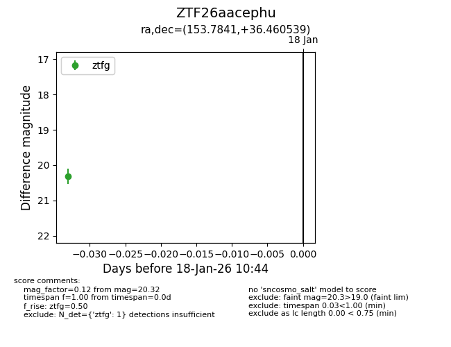
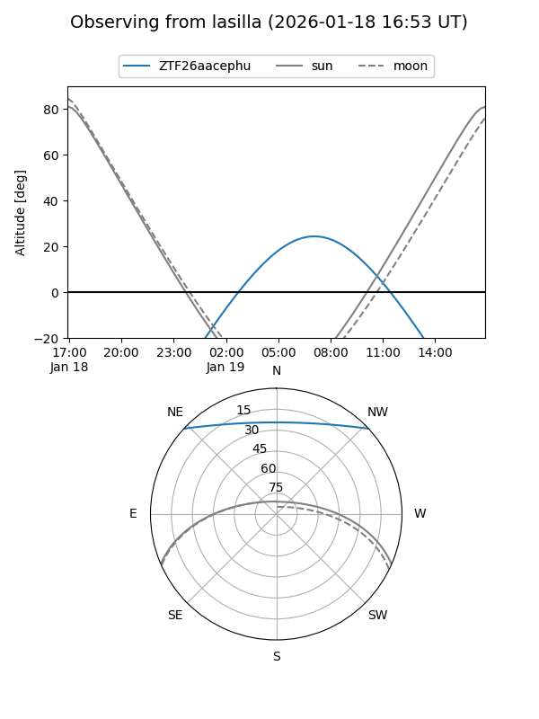
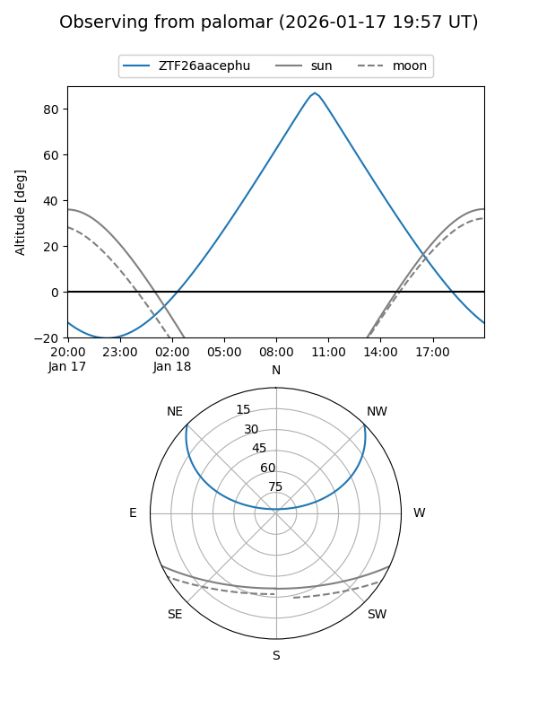

ZTF26aacephu
Target ZTF26aacephu at 2026-01-18 10:45
Aliases and brokers:
FINK: link
Lasair: link
ALeRCE: link
alt names
ZTF26aacephu (ztf,fink_ztf)
Coordinates:
equatorial (ra, dec) = 153.7841,+36.46054
equatorial (HMS+DMS) = 10:15:08.19,+36:27:37.94
galactic (l, b) = (187.2130,+55.75669)
Flags:
Photometry:
last ztfg=20.32
1 ztfg detections
Lightcurve

Visibility


Additional plots